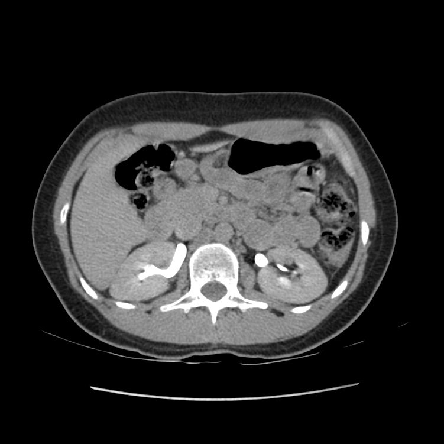

مقاطع تُؤخذ بعد دقائق من الحقن، عندما تُفرز الكليتان الصبغة إلى الكؤوس والحالبين، أو تتوازن الصبغة في الأنسجة.
🎯 Purpose الغرض
إظهار الجهاز البولي ممتلئاً بالصبغة (الكؤوس، الحالب، المثانة) لكشف أورام الظهارة البولية والتسرّب البولي؛ وفي الكبد لمراقبة امتلاء بعض الآفات مثل الورم الوعائي.
💉 Contrast الصبغة وطريقة إعطائها
نفس الحقنة الوريدية؛ المسح يتأخر دقائق دون صبغة إضافية (أو بتقنية البلعة المقسّمة split bolus).
📋 Patient preparation تحضير المريض
ترطيب المريض (شرب الماء) لتحسين امتلاء الجهاز البولي حسب البروتوكول
فحص وظائف الكلى والسؤال عن الحساسية
تفريغ المثانة أو ملؤها حسب طلب البروتوكول
📸 Views / Positions الإسقاطات والوضعيات
الطور الإفرازي: نحو 5–10 دقائق بعد الحقن
الطور المتأخر للكبد (equilibrium): نحو 3–5 دقائق
إعادة بناء MIP / 3D للجهاز البولي
🚫 Contraindications موانع الفحص
حساسية شديدة سابقة للصبغة اليودية
قصور كلوي شديد (لا تُفرز الصبغة جيداً أصلاً)
⚠️ Complications المضاعفات
جرعة إشعاع إضافية بسبب الطور الزائد
مضاعفات الصبغة نفسها (تحسس، تسرّب)
🖼️ Images · الصور
Normal abdomen: renal excretory phaseبطن طبيعي: الطور الإفرازي الكلوي🟢 Normal

Case courtesy of Bruno Di Muzio, Radiopaedia.org, rID: 39505 · CC BY-NC-SA 3.0المصادر